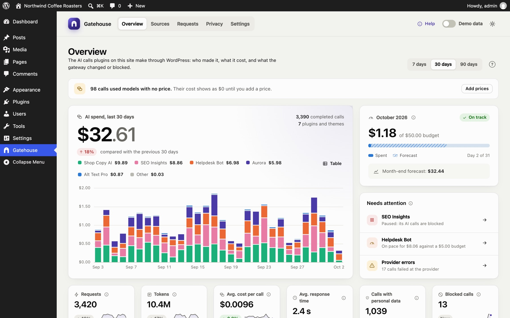
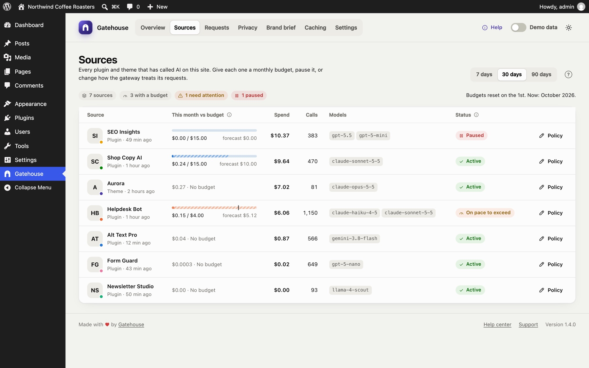

Gatehouse, live in your browser
The demo runs on WordPress Playground: a shop with three months of AI calls from several plugins, budgets, personal data redaction and Pro caching. It takes about a minute to start. Nothing is installed on your computer, nothing you do is saved, and no AI calls leave your browser.
Opens playground.wordpress.net in a new tab. Works best in a desktop browser. Every Pro feature is switched on.
A five-minute tour
Where the money goes
Spend for the last 30 days by plugin, the month-end forecast, the site budget and anything that needs attention.

Cap a plugin
Open Sources, pick a plugin and give it a monthly budget, or pause its AI with one switch.

Every call, in detail
Filter the log and open a call to see its tokens, cost, timing and what redaction removed.

Try the redaction tester
Under Privacy, type a message with an email or phone number and see exactly what the AI provider would receive.

About the demo
- The calls are sample data. The demo blocks real requests to AI providers, so nothing you type is sent anywhere.
- Prefer AI that never leaves your browser at all? See Private AI with WebLLM.
- Want to run it locally? The blueprint is at
demo/blueprint.json.